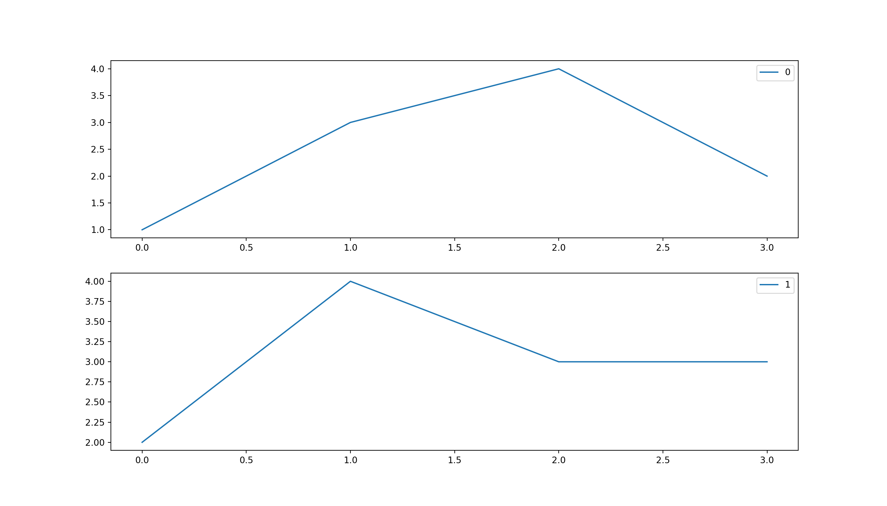
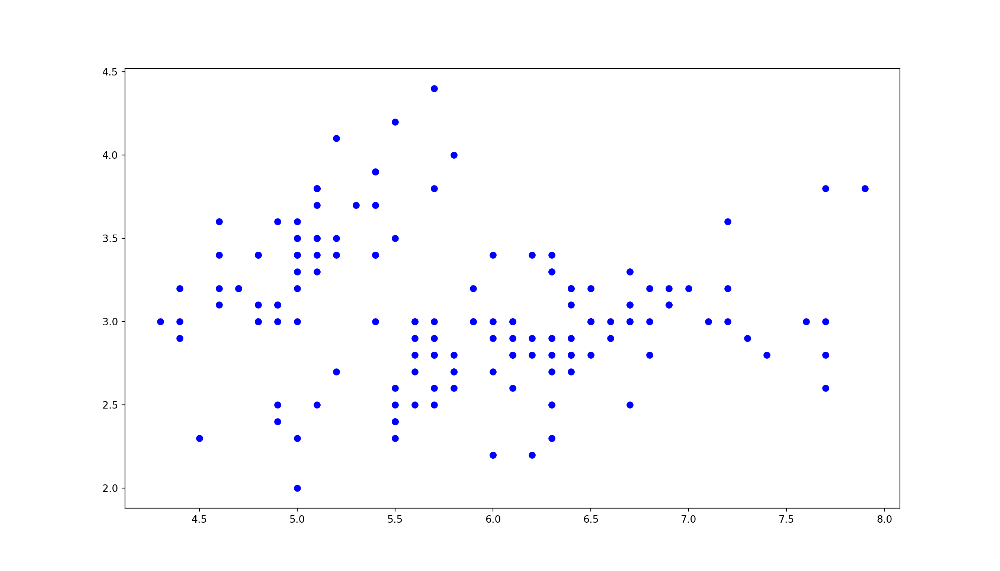
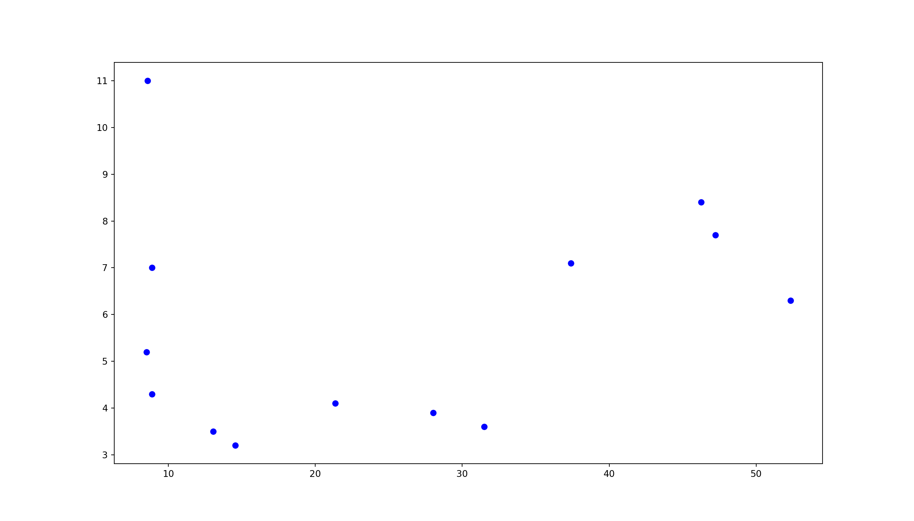

In this tutorial we will go over how to utilize Python in R utilizing the reticulate package. This will allow you to combine both languages and create more powerful analyses.
Note: Utilize the following argument matplotlib$use("Agg", force = TRUE) to allow to use matplotlib in an R markdown.
library(reticulate)
use_python("/usr/bin/python3")
matplotlib <- import("matplotlib")
psycopg2 <- import("psycopg2")
pandas <- import("pandas")
matplotlib$use("Agg", force = TRUE)
### Write the iris and detroit datasets to csv files. We will use these later.
write.csv(x = iris,file = "iris.csv")
write.csv(x = detroit, file = "detroit.csv")import pandas as pd
import matplotlib.pyplot as plt
df=pd.DataFrame([[1, 2], [3, 4], [4, 3], [2, 3]])
fig = plt.figure(figsize=(14,8))
for i in df.columns:
ax=plt.subplot(2,1,i+1)
df[[i]].plot(ax=ax)
print(i)
plt.show()
Here we are going to utilize the pandas library in Python to read in the iris dataset from R. Then we are going to
###Import the pandas library
import pandas
import matplotlib.pyplot as plt
###Utilize the pandas library to read in the iris dataset
iris = pandas.read_csv("iris.csv")
###Print the head of the iris dataset
print(iris.head())
###Create a plot utilizing matplotlib## Unnamed: 0 Sepal.Length Sepal.Width Petal.Length Petal.Width Species
## 0 1 5.1 3.5 1.4 0.2 setosa
## 1 2 4.9 3.0 1.4 0.2 setosa
## 2 3 4.7 3.2 1.3 0.2 setosa
## 3 4 4.6 3.1 1.5 0.2 setosa
## 4 5 5.0 3.6 1.4 0.2 setosax = iris['Sepal.Length']
y = iris['Sepal.Width']
plt.scatter(x, y, c='blue', marker='o')
plt.show()
###Import the pandas library
import pandas
import matplotlib.pyplot as plt
###Utilize the pandas library to read in the iris dataset
detroit = pandas.read_csv("detroit.csv")
###Print the head of the iris dataset
print(detroit.head())
###Create a plot utilizing matplotlib## Unnamed: 0 FTP UEMP MAN LIC ... HE WE HOM ACC ASR
## 0 1 260.35 11.0 455.5 178.50 ... 2.98 117.18 8.60 39.17 306.18
## 1 2 269.80 7.0 480.2 156.41 ... 3.09 134.02 8.90 40.27 315.16
## 2 3 272.04 5.2 506.1 198.02 ... 3.23 141.68 8.52 45.31 277.53
## 3 4 272.96 4.3 535.8 222.10 ... 3.33 147.98 8.89 49.51 234.07
## 4 5 272.51 3.5 576.0 301.92 ... 3.46 159.85 13.07 55.05 230.84
##
## [5 rows x 15 columns]x = detroit['HOM']
y = detroit['UEMP']
plt.scatter(x, y, c='blue', marker='o')
plt.show()
Here we are utilizing the DT library in R to display the data we read in from Python. The py$ syntax allows to call objects from Python into R. We can do this with functions we are sourcing as well.
library(DT)
DT::datatable(data = py$iris)Here we are sourcing our .py python code and then utilizing it in R. One interesting caveat between R and Python is how passing the number 5 is interpreted by Python. If we wrap the number 5 in the as.integer() then we can successfully pass the number 5 to our Python function.
reticulate::source_python(file = 'randomnumber.py')
randomString2(as.integer(5))## [1] "wqgrj"randomString2(as.integer(10))## [1] "ugdhaxntkw"randomString2(as.integer(20))## [1] "gijecquanxltfmhrvpbd"The python code we are sourcing can be found here:
import random
import string
def randomString2(stringLength):
stringLength = stringLength
"""Generate a random string of fixed length """
letters= string.ascii_lowercase
return ''.join(random.sample(letters,stringLength))